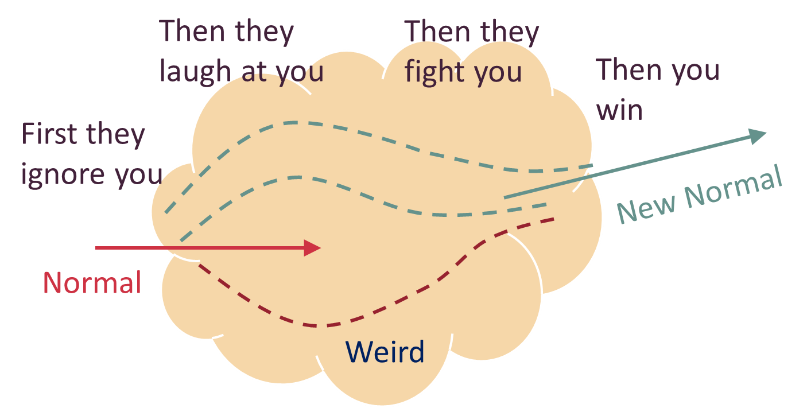
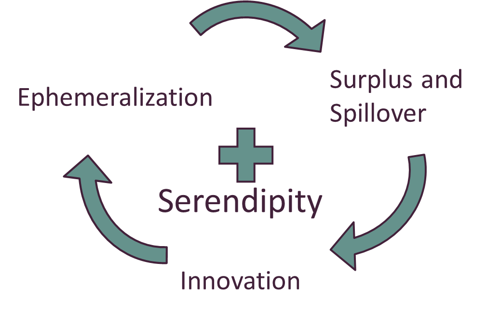
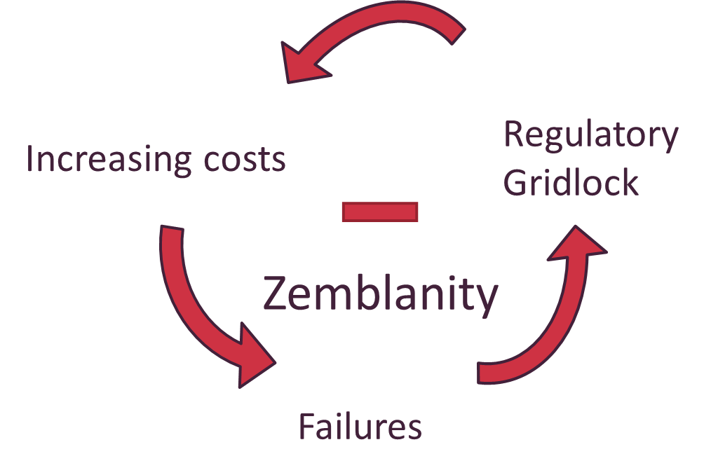

Prometheusianer und Bukolisten
Die einzigartigen Eigenschaften der Software als technologisches Medium sind auch über die Branche hinaus von Bedeutung. Um die weiter reichenden Auswirkungen der Software, die die Welt verzehrt, zu verstehen, müssen wir uns zunächst mit der Natur von Prozessen der Technologieübernahme beschäftigen.
Wenn es um Technologie geht, ist die Menschheit gespalten – zwischen denen, die glauben, dass Menschen zu drastischen Änderungen ihres Lebens in der Lage sind, und denen, die das nicht glauben. Es ist die Spaltung zwischen der Prometheus-Philosophie, wonach Menschen sich ändern können und sollen (und dies auch tun) sowie der Philosophie des Bukolismus, der im Wandel Last oder gar Laster sieht. Aus der Spannung zwischen diesen beiden Philosophien entsteht ein Muster der Technologie-Diffusion, das gut von einem bekannten Zitat beschrieben wird, das in der Startup-Welt beliebt ist: Zuerst ignorieren sie dich, dann lachen sie über dich, dann bekämpfen sie dich, dann gewinnst du.1

-
Alles, was es schon gibt, wenn du auf die Welt kommst, ist normal und üblich und gehört zum selbstverständlichen Funktionieren der Welt dazu.
-
Alles, was zwischen deinem 15. und 35. Lebensjahr erfunden wird, ist neu, aufregend und revolutionär und kann dir vielleicht zu einer beruflichen Laufbahn verhelfen.
-
Alles, was nach deinem 35. Lebensjahr erfunden wird, richtet sich gegen die natürliche Ordnung der Dinge.
Um zu verstehen, warum das in der Tat der Fall ist, biete ich Ihnen ein These an: Die technologische Entwicklung ist kurzfristig immer pfadabhängig, aber langfristig niemals.
Die wichtigsten technischen Fortschritte, einmal erkannt, werden unweigerlich so eingesetzt, dass ihr Potenzial maximal ausgeschöpft wird. Solange noch unausgeschöpftes Potenzial vorhanden ist, werden die Individuen miteinander konkurrieren und ihre Strategien auf unberechenbare Weise so lange anpassen, bis das Potenzial ausgeschöpft ist. Nur eine Bedingung muss dafür erfüllt sein: Irgendwo in der Welt muss eine florierende Region an der Frontlinie der technischen Entwicklung existieren, die von ständigem Tüfteln und einer Wertevielfalt geprägt ist.
Jede Idee kann scheitern. Jeder spezifischen Umsetzung kann die Luft ausgehen. Lokal begrenzte Widerstandsversuche können erfolgreich sein, wie die Amish People beweisen. Einige Personen können sich in einigen Aspekten dem Sog des Wandels entgegenstemmen. Ganze Nationen können kollektiv beschliessen, bestimmte Chancen nicht ergreifen zu wollen. Aber bei grossen neuen Technologien wird in der Regel sehr früh klar, dass sie globale Auswirkungen haben werden, und zwar massgebliche, und dass damit ein entsprechend tief greifender und disruptiver gesellschaftlicher Wandel einhergehen wird. Das ist der pfadunabhängige Teil des technischen Fortschritts, und das ist auch der Grund, warum es in Zeiten schneller technologischer Entwicklungen so etwas wie eine „richtige Seite der Geschichte“ zu geben scheint.
Pfadabhängig hingegen ist es, wie, wann, wo und durch wen eine Technologie ihre maximale Wirkung entfaltet. Unternehmer und Investoren konkurrieren darum, die richtigen Antworten auf diese Frage zu erraten. Aber sobald diese Antworten gefunden sind, gerät die Zeit der Ungewissheit beim Übergang von „eigenartig“ zu „normal“ in Vergessenheit, und im Rückblick wird schon bald der ausgelöste starke gesellschaftliche Wandel als völlig unvermeidlich gesehen werden.
Derzeit lässt sich dieser Prozess ganz gut am Konflikt zwischen den Ride-Sharern und der Taxibranche beobachten. Im Januar 2014 beispielsweise demolierten in Paris streikende Taxifahrer Autos, die für Uber fuhren. Die Taxifahrer zerschlugen Windschutzscheiben und schlitzten Reifen auf. In den Medien wurden sofort Vergleiche zu den ursprünglichen Bukolikern des Industriezeitalters gezogen: den Ludditen des frühen 19. Jahrhunderts.2
Wie die maschinenstürmende Ludditen-Bewegung ist auch der Widerstand gegen Sharing-Anbieter wie Uber und Lyft kein Widerstand gegen innovative Technologie an sich, sondern etwas Grösseres und Komplexeres: ein Versuch, die Auswirkungen technischer Neuerungen zu begrenzen, um die disruptive Veränderung einer bestimmten Lebensweise zu verhindern. Richard Conniff beschrieb das 2011 im Smithsonian Magazine:
Als die industrielle Revolution begann, machten sich die Arbeiter natürlich Sorgen, von immer effizienteren Maschinen verdrängt zu werden. Aber die Ludditen selbst „hatten überhaupt kein Problem mit Maschinen“, sagt Kevin Binfield, Herausgeber der Schriftensammlung Writings of the Luddites von 2004. Sie beschränkten ihre Angriffe auf die Fabrikanten, die Maschinen auf „eine betrügerische und hinterlistige Weise“ einsetzten, um die regulären Arbeitsbedingungen zu umgehen. „Sie wollten Maschinen, die hochwertige Waren produzieren“, sagt Binfield, „und sie wollten, dass diese Maschinen von gut ausgebildeten Arbeitern bedient werden, denen anständige Löhne gezahlt werden. Das war es, worum es ihnen ging.“3
In seinem Essay argumentiert Conniff, die historischen Ludditen hätten schlicht für ihre Idee der menschlichen Werte und deren Erhalt gekämpft, und kommt zu dem Schluss, dass es für eine kritische Auseinandersetzung mit der Technologie notwendig sei, „sich gegen Technologien zu wehren, die Geld oder Bequemlichkeit über andere menschliche Werte stellen“. Ähnliche Argumente verwenden Kritiker in Bezug auf jede Branche, die gerade von Software verzehrt wird.
Diese Ansicht klingt vernünftig. Doch das ist trügerisch: Sie basiert auf dem Wunschdenken, dass ganze Gesellschaften sich darauf einigen könnten und sollten, was der Begriff „menschliche Werte“ bedeutet – und dann auf Basis dieses Konsenses entscheiden könnten, welche Technologien auf welche Weise eingesetzt werden. Wer sich auf „universelle“ menschliche Werte beruft, ruft damit in der Regel nach einer autoritären Festlegung auf entschieden nicht-universelle Werte.
Wie die Ride-Sharing-Debatten zeigen, fällt es sogar Konsumenten und Produzenten in nur einer einzigen Branche schwer, einen Wertekonsens zu erreichen. Proteste von Londoner Taxifahrern im Jahr 2014 führten zum Beispiel zu einem Umsatzanstieg bei den Ride-Sharern4 – ein klarer Beleg dafür, dass Konsumenten nicht unbedingt in Solidarität mit den etablierten Anbietern auf der Grundlage gemeinsamer „menschlicher Werte“ handeln.
Es ist verlockend, solche Konflikte mit der Begrifflichkeit des klassischen Konfliktes zwischen Kapital und Arbeit zu analysieren. Nur landet man damit vorhersehbar in einer Sackgasse: Die Kapitalisten betonen, dass ein steigendes Angebot die Preise nach unten drückt, die Progressiven betonen den Verlust von Arbeitsplätzen für Taxifahrer. Beide Seiten versuchen, die Fahrer der Ride-Sharing-Dienste auf ihre Seite zu ziehen: Die Kapitalisten loben die verbesserten unternehmerischen Chancen, die Progressiven warnen vor einem steigenden Anteil prekärer Einkommen. Kapitalisten nennen die Ride-Sharing-Fahrer gern Freiberufler oder Mikro-Entrepreneure, die Progressiven bevorzugen Labels wie Prekariat (in Anlehnung an Proletariat) oder Streikbrecher. Beide Seiten versuchen, die Zukunft festzulegen und in den Rahmen ihrer bevorzugten Narrative hineinzuzwängen, indem sie mit entsprechend vorgefärbten und -belasteten Begriffen hantieren.
Beide Seiten verzerren auch auf gleiche Weise die Proportionen: Sie übertreiben die Bedeutung des Vertrauten und schätzen das Neue gering. Apps erscheinen da als triviales Spielzeug, während Autos eine erhabene Rolle als Symbol eines jahrhundertealten Lebensgefühls haben. Gesellschaften, die rund um das Auto organisiert sind, gelten als zeitlos, normal und moralisch. Es ist selbstverständlich und unabdingbar, sie heute und auf absehbare Zukunft zu erhalten. Das Smartphone hingegen hat erst einmal nicht mehr als ein kleines bisschen Extrabequemlichkeit geliefert, für einen ansonsten unveränderten (und völlig unveränderlichen) Lebensstil. Seine Wertschöpfung liegt in der Grössenordnung eines Rundungsfehlers und kann dementsprechend ignoriert werden. Somit sehen beide Seiten in diesem Konflikt ein Nullsummenspiel, bei dem lediglich bestehende Werte neu verteilt werden: Gewinnen auf der einen Seite stehen gleich hohe Verluste auf der anderen Seite gegenüber.

Aber wie Marshall McLuhan schon beobachtete, verändern neue Technologien auch unseren Sinn für Proportionen.
Sogar der heutige, noch sehr in Nebel gehüllte Blick auf eine Smartphone-zentrierte Zukunft legt nahe, dass Ride-Sharing sich von einem Service für mehr Bequemlichkeit hin zu einer allgemeinen Notwendigkeit entwickelt. Da es die lokale Mobilität günstiger und flexibler macht, ermöglicht Ride-Sharing neue Lebensstile im städtischen Raum. Insbesondere Berufseinsteiger und Geringverdiener können es sich besser leisten, in attraktiven Städten zu arbeiten, wenn sich ihre Mobilität über starre öffentliche Verkehrsmittel und gelegentlich eine teure Taxifahrt hinaus erweitert. Kleine Restaurants mit begrenztem Kapital können Sharing-ähnliche Dienste nutzen, um einen Lieferservice anzubieten. Es wird nicht mehr lange dauern, und es wird uns schwerfallen, uns vorzustellen, wie sonst in einer Gesellschaft mit Smartphones der Transport organisiert sein könnte.
Die Auswirkungen verlagern sich von der pfadabhängigen Phase, in der noch nicht klar war, ob die Idee überhaupt funktionieren kann, auf die pfadunabhängige Phase, in der die Idee unvermeidlich genug scheint, um andere Ideen darauf aufzubauen.
Solche lawinenartigen Veränderungen von Lebensgefühl und Lebensweise führen Ökonomen auf zwei Effekte zurück: zum einen eine erhöhte Kaufkraft5 (weil technischer Fortschritt in einem Segment die Kosten gesenkt hat, wodurch für andere Segmente mehr Geld zur Verfügung steht), zum anderen positive Spillover-Effekte6 (weil in anderen Branchen oder Ländern unerwartete Vorteile entstehen). Für Technologien mit einer grossen Breitenwirkung stellen sich diese Effekte wie der Schmetterlingseffekt dar: Scheinbar winzige Ursachen führen zu riesigen, unvorhersehbaren Wirkungen. Aufgrund dieser Unvorhersehbarkeit von erhöhter Kaufkraft und Spillover-Effekten kommt der Löwenanteil des durch neue Technologien geschaffenen Wohlstands – etwa 90 % oder mehr – der Gesellschaft als Ganzer zugute7 und nicht den Innovatoren der frühen, pfadabhängigen Phasen der Entwicklung. Dies ist die makroökonomische Entsprechung der ewigen Betaversion: Die Ausführung durch viele überholt die Vision der wenigen, regt zu „Bottom-up“-Experimenten an und verwandelt die Gesellschaft selbst in ein Innovationslabor.
Anstatt ein Rundungsfehler zu sein, konzentriert sich in der Smartphone-App sogar die grösste Wertschöpfung der gesamten Ride-Sharing-Branche. Nur ist dieser Wert kaum sichtbar, da er nicht in die Kassen der am Disruptionskonflikt Beteiligten fliesst.
Würde der Prozess der Übernahme der neuen Technologie vollständig von der Taxi-Industrie diktiert, gäbe es diese Wertschöpfung gar nicht, und die Nullsummenannahme würde zu einer sich selbst erfüllenden Prophezeiung. Ähnlich kontraproduktiv wird es, wenn Unternehmer versuchen, alle oder die meisten der Werte, die sie schöpfen wollen, in die eigene Kasse zu leiten: Vergleichsweise kleine evolutionäre Fortschritte behindern die weitere Entwicklung, und wieder läuft es auf ein Nullsummenspiel hinaus. Der Technologie-Publizist Tim O’Reilly beschreibt den Kern dieses Phänomens, wenn er Unternehmern den Rat gibt, „mehr Wert zu schaffen als abzuschöpfen“. Gerade bei den Produkten, die die gravierendsten Wirkungen auf Leben und Gesellschaft haben, ist der gesellschaftliche Wert um ein Vielfaches höher als der vom Unternehmer abgeschöpfte.
Diese weitgehend unsichtbaren Kaufkraft- und Spillover-Effekte erhöhen nicht nur in der Breite den Lebensstandard. Sie schichten frei werdende kreative Energie, materielle und immaterielle Ressourcen auf neue Gebiete um und treiben damit den technischen Fortschritt auf Nicht-Nullsummenart voran. Der Grossteil der überschüssigen innovativen Energie verteilt sich und führt zu unerwarteten Innovationen in völlig anderen Bereichen. Ein Teil davon nimmt den Weg über unerwartete Feedback-Pfade und verbessert die ursprüngliche Innovation selbst – allerdings in einer Weise, auf die die Pioniere selbst nicht gekommen wären. Insgesamt handelt es sich um eine erheblich stärkere fortschrittsfördernde Wirkung, als man bei dem Begriff „Technologieverbreitung“ annehmen würde.
Die Geschichte der Dampfmaschine ist eine gute Illustration dieser Effekte. Die Spillover-Effekte von James Watts Dampfmaschine sind allgemein bekannt: Ursprünglich zur Produktivitätssteigerung im Bergbau von Cornwall eingeführt, wurde die Dampfmaschine zu einem der wichtigsten Auslöser der britischen industriellen Revolution. Weniger bekannt8 ist, dass die Dampfmaschine selbst von Hunderten von unbekannten Tüftlern mit „Mikro-Erfindungen“ weiterentwickelt wurde, die in den Jahrzehnten unmittelbar nach Ablauf von James Watts Patent Wirkungsgrad und Einsatzfähigkeit der Dampfmaschine verbesserten. Wenn eine Erfindung erst einmal jenen Stand erreicht hat, den Robert Allen „kollektives Erfindungsmilieu“ nennt, mit vielen Personen und Unternehmen, die Informationen frei austauschen und unabhängig an Verbesserungen basteln, gewinnt die weitere Entwicklung eine unaufhaltsame Dynamik, und der Status der Innovation verändert sich von „eigenartig“ zu „das neue Normal“. Beispiele für solche Milieus der florierenden kollektiven Erfindung sind neben Cornwalls Bergbau-Distrikt in den frühen 1800er Jahren das Connecticut-Tal zwischen 1870 und 1890,9 das Silicon Valley seit 1950 und die Shenzen-Region in China seit den 1990er Jahren. Solche aktiv kreativen Regionen konstituieren die Frontlinie der globalen Technologie: die weltweite Bastelzone.
Die pfadabhängige Phase der Entwicklung einer Technologie kann Jahrhunderte dauern, wie Joel Mokyr in seinem Klassiker Lever of Riches aufzeigte. Aber sobald eine Phase kollektiven Erfindungsgeistes beginnt, geben Kaufkraft- und Spillover-Effekte der Entwicklung Dynamik – und der Fortschritt wird gleichzeitig unberechenbar und unvermeidlich. So unvermeidlich, dass man sich ein Bild davon machen kann, welche Entwicklungen als Nächstes auf diese Technologie aufbauen können, auch wenn im Detail noch unklar ist, wie sie sich durchsetzen wird. Heute ist es möglich, auf eine Zukunft zu wetten, die von Ride-Sharing und fahrerlosen Autos geprägt wird, ohne genau zu wissen, wie diese Zukunft aussehen wird.
Als Konsumenten erleben wir diese Art der Evolution als das, was Buckminster Fuller als Ephemerisierung bezeichnete: die scheinbar magische Fähigkeit der Technologie, mehr und mehr mit immer weniger zu leisten.
Sie ist heute am deutlichsten im Mooreschen Gesetz sichtbar, aber sie ist ein Merkmal jeder technologischen Entwicklung. Sauberes Trinkwasser war früher so schwer zu erhalten, dass viele Gesellschaften unter vom Wasser verursachten oder übertragenen Krankheiten litten oder aber teure und ineffiziente Verfahren wie das Abkochen von Wasser im eigenen Zuhause anwenden mussten. Heute haben nur noch etwa zehn Prozent der Weltbevölkerung keinen Zugang zu sauberem Trinkwasser.10 Um Diamanten wurden einst Kriege geführt, so wertvoll waren sie – heute sind künstliche Diamanten von natürlichen nicht mehr zu unterscheiden und immer breiter verfügbar.
Das Ergebnis ist ein positiver Kreislauf zunehmender Serendipität, der von weit verbreiteten Anpassungen des Lebensstils und Kaskaden selbstverbessernder Innovationen angetrieben wird. Eine hohe Kaufkraft und Spillover-Effekte führen zu noch höherer Kaufkraft und neuen Spillover-Effekten: Brad deLongs langsamer Weg zur Utopie für Konsumenten und Edmund Phelps‘ Massenblütezeit für Produzenten. Und wenn dieser positive Kreislauf von einer soften, die Welt verzehrenden Technologie angetrieben wird, ist die kontinuierliche kumulierte Wirkung immens.

Kritiker wie Anhänger von Innovationen missverstehen das Wesen dieses positiven Kreislaufs zutiefst. Kritiker beklagen Anpassungen des Lebensstils häufig als Degeneration und plädieren für eine Rückkehr zu traditionellen Werten. Innovationsenthusiasten hingegen begeistern sich oft für eine spezifische Vision des „next big thing“, manchmal ziemlich buchstäblich von beliebter Science-Fiction abgeleitet – anstatt sich von einem Gefühl unberechenbaren, in alle Richtungen spriessenden Potenzials inspirieren zu lassen. Entsprechend beklagen sie häufig den Mangel an gesellschaftlicher Aufmerksamkeit für ihr Lieblingsprojekt und sehen die Prioritäten anderer Enthusiasten als Degeneration.
Das Ergebnis ist in beiden Fällen das gleiche: der Versuch, den positiven Kreislauf zu unterbrechen. Beide Arten der Klagen fordern, die Anstrengungen zu fokussieren, die Überschüsse von oben zu lenken (durch den Einbehalt übermässiger monopolistischer Gewinne durch Unternehmen oder durch steuerfinanzierte staatliche Programme) und Spillover-Effekte zu begrenzen (durch Beschränkung des Zugangs zu neuen technischen Möglichkeiten). Beide sind letztlich Versuche, kreative Energien auf wenige, vorab festgelegte Pfade zu lenken. Beide werden getrieben von einer makroökonomischen Version der Hoffnung der Ludditen: dass es möglich ist, die Vorteile einer Nicht-Nullsummeninnovation zu geniessen, ohne dabei Berechenbarkeit aufgeben zu müssen. Die Kritiker halten an der Berechenbarkeit der traditionellen Lebensführung fest – die «Next big thing»-Enthusiasten erhoffen die Berechenbarkeit einer spezifischen neuen richtungsweisenden Lebensführung.
Beides sind Spielarten des Bukolismus, der wiederum mit puristischen Ingenieursansätzen kulturell verwandt ist. Der gleiche hochmodernistische Von-oben-herab-Modus, gleichermassen zum Scheitern verurteilt. Wie puristische Software-Visionen werden auch bukolische Visionen von dem obsessiven Wunsch geprägt, ein spezifisches, endliches Nullsummenspiel endgültig zu gewinnen – anstatt einfach das unendliche Nicht-Nullsummenspiel zu spielen.
Wenn wir der Verlockung der bukolischen Visionen widerstehen und der positive Kreislauf sein Werk tun darf, erhalten wir prometheischen Fortschritt: unvorhersehbare Evolution, gerichtet auf maximale gesellschaftliche Wirkungen, unbelastet von Begrenzung durch deterministische Vorstellungen. So wie grossartige Software entsteht, wenn man bei ungefährem Konsens den Code einfach laufen lässt, entstehen grossartige Gesellschaften, wenn man Kaufkraft- und Spillover-Effekte einfach laufen lässt. So wie pragmatische und puristische Entwicklungsmodelle im technischen Bereich sowohl zu Serendipität als auch zu Zemblanität führen, führen prometheische und bukolische Modelle zu Serendipität und Zemblanität auf der Ebene ganzer Gesellschaften.
Gibt man der bukolischen Forderung nach Zurückhaltung oder Rückzug nach, sucht sich die Frontlinie der Technologie einen anderen Ort, was zu Jahrhunderten der Stagnation führen kann. Genau das passierte in China und der islamischen Welt ab dem 15. Jahrhundert, als die technologische Frontlinie nach Europa auswanderte.
Folgt man stattdessen der anderen bukolischen Forderung, ein bestimmtes „next big thing“ auf Kosten vieler unbestimmter „small things“ zu verfolgen, sind die Ergebnisse besser und können anfänglich sogar beeindruckend sein. Der Preis, der dafür zu zahlen ist, ist allerdings eine Verhärtung der Technologielandschaft, mit autoritären, korporatistischen Institutionen – was zu einem Teufelskreis führen kann, der Innovation erstickt.

Das „Apollo“-Programm zum Beispiel erfüllte John F. Kennedys Aufruf, in einem Jahrzehnt einen Menschen auf den Mond zu bringen. Es führte aber auch zum unaufhaltsamen Aufstieg des militärisch-industriellen Komplexes, vor dem sein Vorgänger Dwight D. Eisenhower gewarnt hatte. Den Sowjets erging es noch schlimmer: Nach ebenso beeindruckenden Leistungen beim Wettlauf ins All brach die Gesellschaft, die diese Technologie hervorgebracht hatte, unter der Last des Autoritarismus zusammen. Dass es für die USA nicht so schlimm kam, lag an der Verschiebung der technologischen Frontlinie an die Westküste, wo es ihr gelang, auf smarte Weise aus dem militärisch-industriellen Komplex auszubrechen. Damit konnte viel an kreativer Energie dem Erstickungstod entgehen und in ein günstigeres Umfeld entkommen.
Jetzt verzehrt Software die Welt. Jetzt werden wir, leicht vorhersehbar, erneut Forderungen hören, doch lieber bukolischen Entwicklungsmodellen zu folgen. Und wieder einmal wird es unsere Aufgabe sein, diesen einfachen Antworten zu widerstehen.
[1] Dieses Zitat wird häufig Gandhi zugeschrieben, doch es ist zweifelhaft, dass es tatsächlich von ihm stammt. Ironischerweise scheint der wahrscheinlichste Ursprung des Ausspruchs eine Rede des Gewerkschaftlers Nicholas Klein aus dem Jahr 1918 zu sein, der folgende Formulierung verwendete: „Zuerst ignorieren sie dich. Dann machen sie dich lächerlich. Und dann greifen sie dich an und wollen dich brennen sehen. Und dann bauen sie dir Denkmäler.“ Die erste klare Formulierung dieses Gedankens (wenn auch nicht in diesem Wortlaut) im Sinne einer Struktur des Widerstands gegenüber einer neuen Technologie geht vermutlich auf Elting Morisons Arbeit Men, Machine and Modern Times von 1968 zurück. Morisons Modell beruht auf einer genauen Untersuchung der Einführung einer verbesserten Technologie für Marinegeschütze in der US Navy durch William Sims gegen Ende des 19. Jahrhunderts. Das dreistufige Modell könnte folgendermassen umschrieben werden: Erst ignorieren sie dich, dann bezeichnen sie deine Idee als unmöglich, dann verlegen sie sich darauf, dich zu beschimpfen. Heutzutage findet sich die bekannteste Formulierung dieses Gedankens in Clayton Christensens enger gefasstem Konzept der Disruption, doch die allgemeine Struktur des Widerstands kann selbst dann beobachtet werden, wenn Technologie auf nicht disruptive Weise durch eine interne Bekehrungstätigkeit eingeführt wird, wie beispielsweise im Fall von Sims und der Marinegeschütze.
[2] Ein Beispiel ist Uber and the Neo-Luddities, Salon, 2014.
[3] Richard Coniff, What the Luddites Really Fought Against, Smithsonian Magazine, 2011.
[4] Siehe beispielsweise der Artikel Uber’s sign-ups jump 850% after strike ‘own goal’ auf CNBC im Jahr 2014, der die Auswirkungen eines Streiks von Londoner Taxifahrern behandelt.
[5] Die Kaufkraft ist die Differenz zwischen dem, was Kunden für einen Service zu zahlen bereit sind und dem Preis des Services. Diese Differenz gibt den Kunden neue Möglichkeiten, um Geld auszugeben.
[6] Spillover bezeichnet grob gesagt Vorteile in einer Branche, die durch unabhängige Ursachen in anderen Branchen entstehen. Der Begriff wird auch für derartige Vorteile verwendet, die sich über nationale Grenzen hinweg verbreiten.
[7] William D. Nordhaus, Schumpeterian Profits and the Alchemist Fallacy, Yale Economic Applications and Policy Discussion Paper No. 6, 2005.
[8] Collective invention during the British Industrial Revolution: the case of the Cornish pumping engine, Alessandro Nuvolari, Camb. J. Econ. (2004) 28 (3):347-363.
[9] Die technologische Blütezeit rund um die Springfield Armory und die Harpers Ferry Armory in Connecticut inspirierte Mark Twain zu dem Roman Ein Yankee am Hofe des König Artus.
[10] Im Jahr 2010 waren die Millennium-Entwicklungsziele in Bezug auf Wasser bereits übertroffen worden: Seit 1990 erhielten mehr als zwei Milliarden Menschen Zugang zu Trinkwasser. Für 2015 wurde eine Zahl von 8 Prozent prognostiziert. Auch wenn der Zugang zu Wasser nicht gleichbedeutend mit einer sicheren Wasserversorgung ist, handelt es sich dennoch um einen bemerkenswerten Fortschritt. Siehe: Global Access to Clean Drinking Water and Sanitation: U.S. and International Programs, Tiaji Salaam-Blyther, Congressional Research Service, September 2012